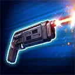
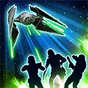
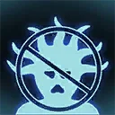

Cassian Andor (Undercover)
Cassian utilizes his talents in obfuscation to Undermine his enemies and protect valuable allies
Cassian utilizes his talents in obfuscation to Undermine his enemies and protect valuable allies

Deal Physical damage to target enemy and inflict Speed Down for 1 turn. If they already had Speed Down from this ability, Undermine them for 1 turn, which can't be resisted. If they were already Undermined, Undermine another random enemy who doesn't already have it for 2 turns, which can't be dispelled.
During his turn, if all enemies are Undermined, call all other Rebel Fighter allies to assist.

Dispel all debuffs on Rebel Fighter allies and they gain High Morale for 1 turn, which can't be copied, and 10% Turn Meter. Deal Physical damage to all enemies and an additional instance of damage to Undermined enemies. Undermine the enemy with the least Turn Meter for 2 turns.
Target Rebel Fighter ally gains 50 Speed for 1 turn and recovers 20% Health and Protection. If all allies are Rebel Fighters, target other ally also gains VIP until they are damaged twice.
Cassian deals 30,000 True damage to target enemy, which can't be evaded, and Blinds them for 1 turn. Undermine the enemy in the Leader slot for 1 turn, which can't be resisted. This ability deals 15,000 more True damage for each turn a VIP has taken this encounter (stacking max 150,000 additional damage).
omicron Boost : While in Grand Arenas: If all allies are Rebel Fighters, target other Rebel Fighter ally gains Damage Immunity for 1 turn. Rebel Fighter allies gain 10% Turn Meter and Max Health for the rest of the encounter. Target enemy is inflicted with Healing Immunity for 1 turn, which can't be dispelled or resisted, and if they had Undermine all other enemies without Undermine are Undermined for 1 turn, which can't be resisted.
Rebel Fighter allies have +100% Potency and 50% Defense. Undermined enemies have -25 Speed and can't be assisted. If all allies are Rebel Fighters, Cassian takes only 1 damage from attacks unless he is critically hit on that turn. Rebel Fighter allies have +100% Tenacity until a Rebel Fighter ally is defeated (excluding summoned units).
At the start of Cassian's VIP's turn, all Undermined enemies lose 10% Max Health for the rest of the encounter and Rebel Fighter allies gain 10% Defense Penetration and Offense (stacking) for the rest of the encounter. While a Rebel Fighter ally has Cassian's VIP all allied Rebel Fighters have +100% Critical Avoidance.
Whenever an enemy dispels Undermine, Rebel Fighter allies gain 20% Turn Meter. Whenever an enemy dispels a buff on a Rebel Fighter ally they are Undermined for 1 turn, which can't be resisted.
omicron Boost : While in Grand Arenas: Rebel Fighter allies take reduced damage from Percentage Health damage effects and gain Instant Defeat Immunity which can't be copied, dispelled, or prevented, until a Rebel Fighter ally is defeated (excluding summoned units). Whenever an ally is damaged while they have Cassian's VIP, the cooldown of Varian Skye is reset. At the start of Cassian's VIP's turn, Rebel Fighter allies gain 5% Mastery.

Cassian has +50% Critical Avoidance per Undermined enemy and gains 100% counter chance at the start of each non-Undermined enemy's turn until the end of their turn. Cassian is immune to Critical Hit Immunity. Whenever Cassian attacks out of turn he is inflicted with Vulnerable for 1 turn.
If there were no Galactic Legends at the start of battle, whenever there are 3 or more out of turn attacks during an enemy's turn, that enemy is Undermined for 1 turn, which can't be resisted. Whenever an enemy is Undermined, Cassian gains Fearless until no enemies are Undermined. Whenever an enemy is Undermined, Cassian gains 10% Turn Meter. Whenever an Undermined enemy removes Turn Meter from Cassian, all enemies lose 25% Turn Meter.
Whenever an enemy with Undermine gains a buff from their ally, that ally is Undermined for 1 turn, which can't be resisted, and at the end of the turn, all buffs are dispelled on the enemy who gained the buff, and ally Rebel Fighters have their debuffs dispelled.
At the start of Cassian's VIP's turn, Cassian recovers full Health and Protection. Whenever Cassian's VIP uses a Special ability the target enemy is Undermined for 1 turn.
omicron Boost : While in Grand Arenas:: The enemy that damages an ally with VIP is Undermined for 1 turn, which can't be dispelled or resisted. At the start of Cassian's VIP's turn, also recover full Health and Protection of the weakest ally. Whenever Cassian's VIP uses an ability, the target enemy is Undermined for 1 turn.